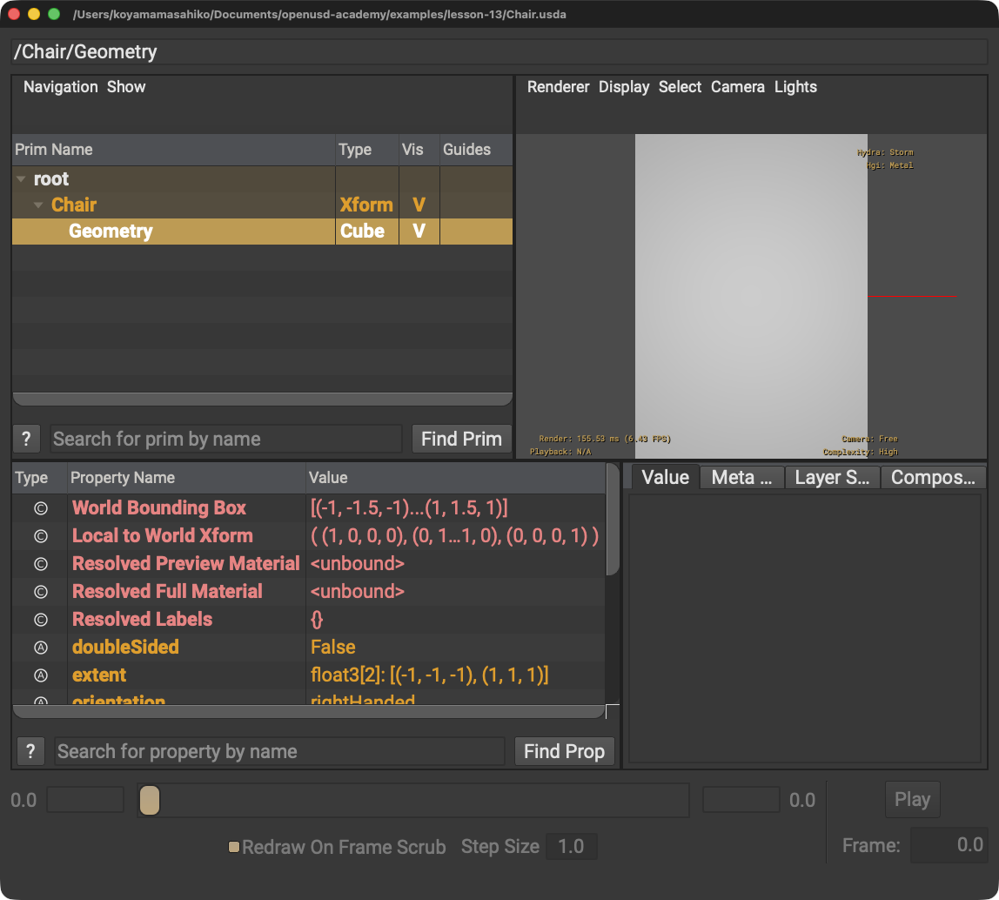

Asset Structure
入口が明確で、再利用・合成・共同作業がしやすい構造にします。
STEP 71 · ASSET STRUCTURE
入口・インターフェース・階層・作業分担をそろえます
今日これだけ
公式情報に基づく説明
スケールするAsset Structureは再利用と共同作業を支えます。Asset Interfaceは利用者が操作する安定した入口です。WorkstreamはLayer Stackで並行作業を分けます。Kind MetadataはSchema型とは別にModel Hierarchy上の役割を示します。Reference/Payload Patternでは利用者がinterface fileをReferenceし、その内部で重いcontentsをPayloadします。
Diagram
USDA
#usda 1.0
(
defaultPrim = "Chair"
)
def Xform "Chair" (
kind = "component"
prepend payload = @./contents.usda@</Chair>
)
{
}Layer MetadataのdefaultPrimは、このLayerを外部からPrim Pathなしで参照するときの対象Primを指定します。Prim MetadataのkindはModel Hierarchy上の役割、payloadは重い内容へのArcです。ここではcontents Layer内の/Chairを明示しています。@ @はAsset Path、山括弧は参照先のPrim Pathです。

Chairを入口にして、Payloadの内容であるGeometryがその子として読み込まれています。Python
from pxr import Usd, UsdGeom, Kind, Sdf
stage = Usd.Stage.CreateNew("Chair.usda")
chair = UsdGeom.Xform.Define(stage, "/Chair")
stage.SetDefaultPrim(chair.GetPrim())
Usd.ModelAPI(chair.GetPrim()).SetKind(Kind.Tokens.component)
chair.GetPrim().GetPayloads().AddPayload("./contents.usda", Sdf.Path("/Chair"))
stage.Save()引用符はファイル名とPath、丸括弧は入力、ピリオドはAPIへ進む区切りです。Pythonの各行は同じインデントで順に実行されます。
USDA → Python mapping
USDA
defaultPrim = "Chair"↓Python
stage.SetDefaultPrim(chair.GetPrim())USDA
kind = "component"↓Python
SetKind(Kind.Tokens.component)USDA
prepend payload = @./contents.usda@</Chair>↓Python
AddPayload("./contents.usda", Sdf.Path("/Chair"))Chapter map
入口が明確で、再利用・合成・共同作業がしやすい構造にします。
group・assembly・componentで浅い高水準の階層を作ります。componentはleaf modelです。
下流が利用する入口、Variant、重要なFieldを安定させます。
分野ごとのLayer Stackを分け、interface側で集約します。
interfaceをReferenceし、内部でcontentsをPayloadしてロード制御を隠します。
Beginner notes
公式: AddPayload()は既定でprependのList Editを記述します。参照先Prim Pathを省く場合、参照先Layerに有効なdefaultPrimが必要です。
よくある間違い
原因: componentはModel Hierarchyのleafです。
解決策: assemblyやgroupで集約します。
原因: 内部実装がinterfaceへ漏れています。
解決策: Reference/Payload Patternで隠します。
Glossary
Official references
確認日: